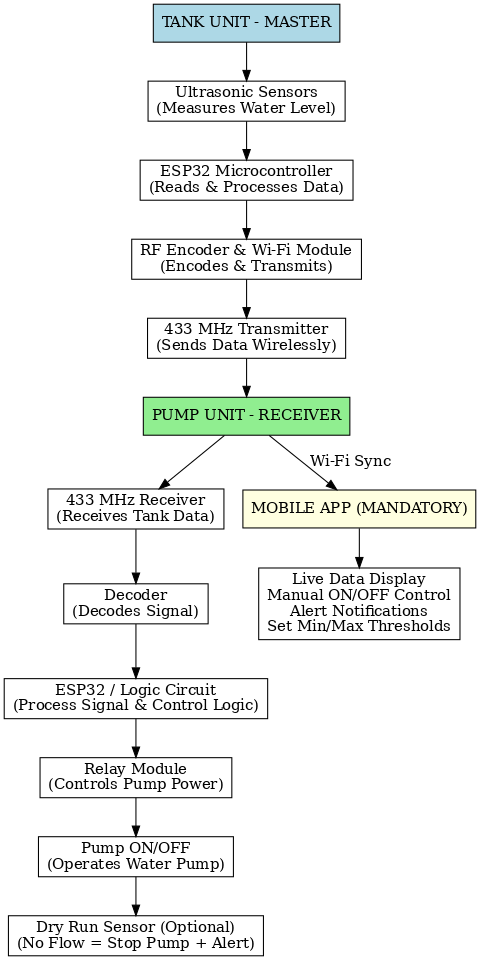

Sump Type Water Controller
How It Works
Flowchart
This diagram illustrates the functional flow of the Automatic Wireless Water Level Controller, including sensor input, wireless transmission, pump control, and app interaction.

Description & Use
A Sump Type Water Controller automatically monitors the water level in sump tanks and controls the motor accordingly. It ensures the motor turns ON when the sump is full and OFF when empty. This avoids dry running, water wastage, and manual operation, making it ideal for residential and commercial water systems.
Key Devices & Components
- Water level sensors (float or capacitive type)
- Relay control board with protection circuitry
- Microcontroller unit for logic control
- LED status indicators & buzzer alerts
- Power supply module (230V AC input)